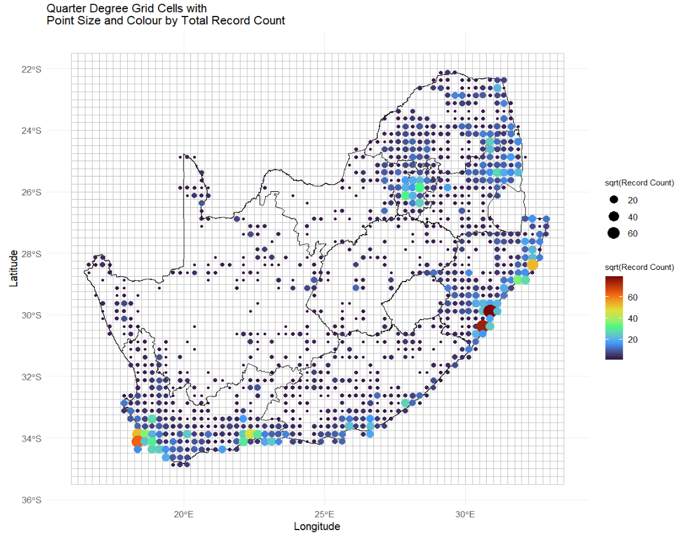
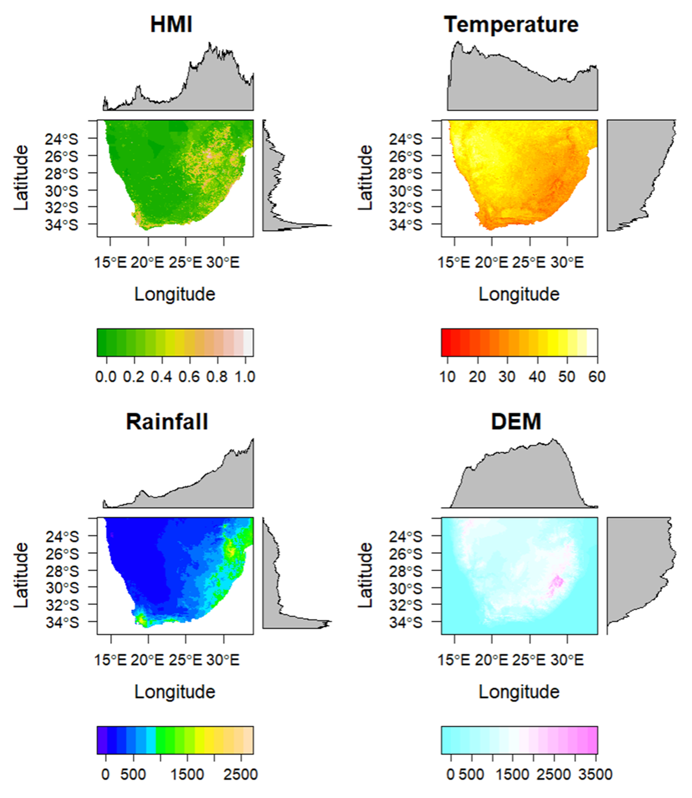

Dissimilarity cube

Specification for dissimilarity cubes and their production
This document presents the specification for “dissimilarity cubes”, to map compositional dissimilarity and turnover of species using occurrence data. It provides a workflow to compile co-occurrence matrices for species in a specified geographic area, source georeferenced environmental data, and map compositional dissimilarity using ‘MS-GDM' and 'zetadiv'.
Task 4.2: Dissimilarity cube [Lead: SUN]
Design workflows to compile a co-occurrence matrix for species in a geographic area, source georeferenced environmental data, and map compositional dissimilarity using ‘MS-GDM', 'zetadiv', and 'SSDM' R packages. This includes identifying bioregions and predicting future compositional turnover and bioregion shifts.
- Nov 2024: M13 – Code design: Map compositional dissimilarity & turnover
- Apr 2025: M14 – Code test: Map compositional dissimilarity & turnover
Introduction
Biodiversity monitoring is fundamental in understanding and conserving ecological dynamics, particularly in the context of accelerating global change. Central to these efforts is the concept of dissimilarity, which quantifies the differences in species composition across spatial or temporal scales and provides critical insights into ecosystem diversity and structure. Dissimilarity, alongside traditional biodiversity metrics such as species richness (the number of unique species) and alpha diversity (local diversity within a habitat), as well as beta (diversity among habitats) and zeta diversity (higher-order diversity measures capturing shared species across multiple sites), is increasingly employed in conservation studies. Together, these metrics provide a comprehensive picture of biodiversity patterns and can elucidate the spatial turnover of species assemblages, helping to identify regions of high ecological uniqueness or vulnerability.
Within this context, advanced modelling techniques like Generalized Dissimilarity Modelling (GDM) and its multi-site extension, Multi-Site Generalized Dissimilarity Modelling (MS-GDM), are powerful tools. GDM is a statistical framework that models compositional dissimilarity as a function of environmental and spatial gradients, effectively linking species turnover to ecological processes. MS-GDM expands upon this by incorporating multiple sites simultaneously, leveraging zeta diversity metrics to capture more complex spatial patterns and interactions across landscapes.
Species richness refers to the total number of unique species within a community or region.
Alpha diversity captures within-site species diversity, while beta diversity measures differences in species composition between habitats or sites.
Zeta diversity is an extension used in multi-site comparisons, which calculates species overlap across multiple locations, helping to capture patterns of similarity and dissimilarity in complex landscapes.
Generalized Dissimilarity Modelling (GDM): GDM is a non-linear modelling approach for relating species turnover to spatial and environmental gradients, effectively capturing the complexity of species-environment relationships. Multi-Site Generalized Dissimilarity Modelling (MS-GDM): MS-GDM extends GDM for multi-site comparisons, particularly useful in understanding higher-order patterns of biodiversity through the incorporation of zeta diversity. This is some text.
Objectives
- Streamline Data Access and Preparation: Address the need for efficient automation of species occurrence and environmental data processing, reducing the manual effort and potential inconsistencies in ecological data collection.
- Enhance Species Co-occurrence and Compositional Analysis: Provide novel methods for quantifying co-occurrence patterns and compositional dissimilarities, filling the gap in scalable, standardized tools for analysing species interactions and biodiversity composition.
- Advance Bioregional Classification and Spatial Mapping: Introduce a robust framework for classifying regions based on ecological similarity, offering improved tools for delineating bioregions and capturing landscape-scale biodiversity patterns.
- Innovate Modelling and Prediction of Compositional Turnover: Utilize advanced multiscale models to quantify and predict compositional changes, addressing a critical need for understanding the drivers of biodiversity turnover and their interactions with environmental gradients.
- Assess Bioregional Shifts and Biodiversity Change: Develop new approaches for evaluating and visualizing shifts in bioregion boundaries and compositional changes under future scenarios, providing essential insights for conservation planning and ecosystem management in a changing climate.
Methods
Dissimilarity Workflow: The development of this R package aims to streamline and enhance biodiversity research by automating data access, pre-processing, and analysis, addressing key challenges faced in ecological studies. By integrating functions for species occurrence data retrieval, environmental data processing, co-occurrence analysis, and compositional turnover modelling, the package provides a comprehensive toolkit for exploring spatial patterns and ecological relationships. It is designed to be user-friendly, allowing researchers to quickly assess biodiversity metrics, classify bioregions, and model future changes under different environmental scenarios. Ultimately, this package supports efficient, repeatable, and scalable analyses, facilitating deeper insights into ecosystem dynamics and aiding conservation efforts in the face of global change.
Data Access and Preparation
This section focuses on automating the retrieval and pre-processing of core data, including species occurrence and environmental variables. These data form the basis for further ecological analysis and model building. Objective: Automate access and preparation of species and environmental data to support downstream biodiversity assessments.
Species Occurrence Records
Data will be obtained from i) local sources; ii) Global Biodiversity Information Facility (GBIF); iii) species occurrence cubes from B3.
Automate access and preprocessing of species occurrence data from sources such as local databases, the Global Biodiversity Information Facility (GBIF), and species occurrence cubes. This involves assembling data on species distributions across specified taxonomic groups and regions, resulting in matrices that quantify species co-occurrence within locations.
get_species: Fetches and formats species occurrence data from various sources (e.g., local databases, GBIF), creating presence-absence or abundance matrices.

Table x: Expected structure of species occurrence records in short format data frame.
| site_id | x (longitude) | y (latitude) | sp_name (species) | pa (presence/absence) | abund (abundance) |
|---|---|---|---|---|---|
| 1 | 30.0 | -20.0 | Pieris brassicae | 1 | 5 |
| 2 | 31.0 | -21.0 | Eutricha capensis | 1 | 10 |
| 2 | 31.0 | -21.0 | Acraea horta | 1 | 1 |
| 3 | 32.0 | -22.0 | Dixeia charina | 1 | 2 |
| 3 | 32.0 | -22.0 | Pieris brassicae | 1 | 4 |
| 3 | 32.0 | -22.0 | Acraea horta | 1 | 12 |
Table x: Expected structure of species occurrence records in long format data frame.
| site_id | x (longitude) | y (latitude) | sp_1 (pa/abund) | sp_2 (pa/abund) | sp_3 (pa/abund) | sp_4 (pa/abund) |
|---|---|---|---|---|---|---|
| 1 | 30.0 | -20.0 | 1 | 0 | 0 | 0 |
| 2 | 31.0 | -21.0 | 0 | 1 | 1 | 0 |
| 3 | 32.0 | -22.0 | 1 | 0 | 1 | 1 |
Environmental Data
Environmental data are sourced from i) local sources, ii) WorldClim using geodata, iii) CHELSA using climenv, iv) Google Earth Engine using rgee, and v) additional biodiversity data using mapme.biodiversity.
Automate access and preprocessing of environmental data using diverse sources (e.g., local records, WorldClim, CHELSA, GEE) to compile georeferenced environmental layers (e.g., climate, soil, topography) that are essential for understanding ecological drivers of species distributions.
get_enviro: Retrieves georeferenced environmental data (e.g., climate, soil) and clips it to the study area extent, making it compatible with species data.

Data Formatting
Organizes the prepared data into structured data frames for easy access during analysis.
format_df: Organizes the prepared data into structured data frames for easy access during analysis:
- site_xy: Holds spatial coordinates of sampled sites.
- site_sp: Site-by-species matrix for biodiversity assessments.
- site_env: Site-by-environment matrix linking species and environmental data.
Table x: Output structure of site_xy, which holds spatial coordinates of sampled sites.
| site_id | x (longitude) | y (latitude) |
|---|---|---|
| 1 | 30.0 | -20.0 |
| 2 | 31.0 | -21.0 |
| 3 | 32.0 | -22.0 |
Table x: Output structure of site_sp, the site-by-species matrix used for biodiversity assessments.
| site_id | sp_1 (pa/abund) | sp_2 (pa/abund) | sp_3 (pa/abund) | sp_4 (pa/abund) | sp_... (pa/abund) |
|---|---|---|---|---|---|
| 1 | 1 | 0 | 0 | 0 | 1 |
| 2 | 0 | 1 | 1 | 0 | 1 |
| 3 | 1 | 0 | 1 | 1 | 1 |
Table x: Output structure of site_env, the site-by-environment matrix linking species and environmental data.
| site_id | enviro_1 (variable) | enviro_2 (variable) | enviro_3 (variable) | enviro_4 (variable) |
|---|---|---|---|---|
| 1 | 30 | 0.123 | 1 | 1.45 |
| 2 | 20 | 0.812 | 5 | 8.82 |
| 3 | 10 | 0.021 | 4 | 2.040 |
Species Co-occurrence and Compositional Analysis
This section provides tools to quantify species co-occurrence patterns and compositional dissimilarities, enabling insights into species interactions and biodiversity composition across landscapes. Objective: Quantify co-occurrence and compositional differences across locations to identify patterns of biodiversity and species interactions. Quantify co-occurrence patterns to assess the frequency with which species are found together across the landscape. This will yield a co-occurrence matrix and a raster layer illustrating spatial patterns in species associations. Quantify compositional dissimilarity to identify spatial variation in species composition across different locations. This analysis will produce dissimilarity matrices and spatially explicit rasters visualizing biodiversity turnover across the study area.
calc_cooc: Computes co-occurrence matrices and rasters to capture how often different species are found together, providing a foundation for analysing species associations.
calc_dissim: Calculates dissimilarity metrics to measure variations in species composition and environmental properties across sites, highlighting areas of compositional turnover.
Bioregional Classification
This section enables classification of landscapes into bioregions based on ecological and compositional similarities, helping identify areas that share common ecological traits. Objective: Classify regions based on compositional similarity to delineate bioregions, which reflect areas with unique ecological characteristics and species assemblages. Classify compositional similarities into unique bioregions by applying clustering algorithms to group locations with similar species compositions. The resulting bioregions offer insights into regions sharing similar ecological characteristics and species pools.
map_bioreg: Classifies the study area into distinct bioregions using clustering algorithms, with optional fuzzy clustering to assess stability across bioregion boundaries.
Modelling and Predicting Compositional Turnover
This section includes tools for modelling compositional turnover as a function of geographic distance and environmental gradients, as well as predicting future compositional changes under different environmental scenarios. Objective: Model dissimilarity to understand factors driving compositional turnover and predict future changes due to environmental drivers, such as climate change. Model dissimilarity as a function of geographic distance and environmental conditions using MS-GDM, with dissimilarity values as the response variable and environmental layers as predictors. Model outputs will include coefficient estimates, standard errors, p-values, and R² values, enhancing our understanding of biodiversity patterns. Predict future changes in species composition by extrapolating from MS-GDM results under projected environmental conditions (e.g., climate scenarios from CMIP5 or CMIP6). Later this will identify regions vulnerable to shifts in biodiversity and delineate areas where bioregion boundaries may alter in response to environmental change, offering a spatial forecast of biodiversity dynamics under future scenarios.
model_dissim: Uses a Multiscale Generalized Dissimilarity Model (MS-GDM) to relate compositional dissimilarity with geographic and environmental factors, providing coefficient estimates and model diagnostics.
predict_dissim: Projects future compositional dissimilarities using MS-GDM results and future environmental scenarios to predict biodiversity changes under changing conditions.
Bioregional Change Assessment
This section provides tools to assess changes in bioregions and biodiversity composition over time, comparing current and future scenarios to identify areas vulnerable to shifts in ecological assemblages. Objective: Assess landscape-level shifts in biodiversity and bioregions under future environmental change scenarios, identifying potential regions of ecological transformation. Classify predicted future compositional similarities (under projected environmental conditions, e.g., climate scenarios from CMIP5 or CMIP6) into new set of unique bioregions by applying clustering algorithms to group locations with similar species compositions. Assess differences.
calc_dissimDiff: Computes differences in dissimilarity metrics between current and future projections, visualizing expected shifts in biodiversity composition.
map_bioregDiff: Maps changes in bioregion boundaries over time, highlighting regions likely to experience significant shifts, losses, or new bioregional formations under future conditions.
Results
In progress
Discussion
In progress
Conclusion
In progress
Data Availability Statement
In progress
Acknowledgements
References
License
This project is licensed under the MIT License MIT License - see the LICENSE.md file for details